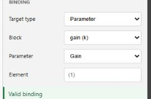

This third tutorial adds interactive controls to a running model. You place a Slider, a Display, and a Gauge, bind them to the model, and run in real time so you can change a parameter and watch the response. It continues from the model built in nflow_tutorial_continuous, but any model with an adjustable parameter and an output signal works.
Place the dashboard blocks
Dashboard blocks have no input or output ports. Each one reads or writes a target that you choose in the inspector, so they are placed anywhere on the canvas without wires.

Bind the controls
The status under the binding selector reports whether the binding is valid or why it is not. Bindings use stable block identifiers, so renaming or moving a block does not break them. See nflow_dashboard for every control and display and for the signal, parameter, and variable targets.

Set the execution mode
Select nothing to show the Model tab, then open Simulation and set Execution. Real-time paces the run to the wall clock, so one second of simulated time takes about one second, which is what you want when adjusting controls by hand. Fast runs as quickly as the machine allows. Auto lets the model decide.
The execution mode is read when a run starts. Set it before you press Run. Changing it while a simulation is running does not affect that run; it applies to the next one. This is different from a dashboard control bound to a parameter, whose change is applied during the run at the next step.
Run and interact
Press Run. While the model runs, drag the Slider to change its bound parameter. The Display and the Gauge update at each major step, and the Scope shows how the response changes. A pointer gesture that starts on a control stays with that control until you release it, so you can drag a slider without moving the block. To move the block instead, drag its body outside the control area.
What to try next
Add a Lamp or a Gauge with colored ranges to flag a threshold, or a Push Button to switch a parameter between two states. Open the runnable examples below to see a full interactive panel.